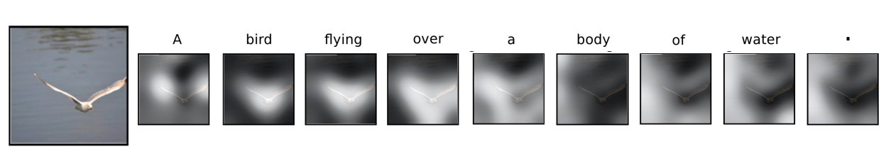
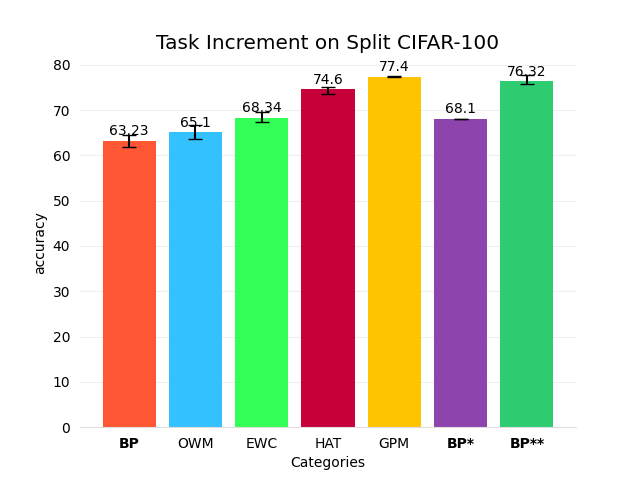

Feature Learning from Continual Learning
This blog documents some of the insights on feature learning from the perspective of continual learning.
I have always been curious about one thing: what makes neural networks so powerful? One of the sub-questions is: what do neural networks actually learn?
A very famous example I would like to use is self-attention: 
When generating words, the model concentrates on different parts of the picture, similar to how we would.
But are all models learned in this way?
First, we need to remember what the models are doing. They are extracting features, discarding unneeded information (such as noise), and focusing on the valuable content. This valuable content is then fed into the final fully connected (fc) layer, which acts as a classifier—the layer that learns the mapping between features and labels.
An Interesting Phenomenon
I was enrolled in an AI-related course at my school, and one of the projects was to do image classification on a dataset we collected ourselves. The dataset was extremely poor, and the data distribution was highly unideal. For example, a tin can could have a label of 'metal', 'waste', or even 'hazardous waste' if it contains outdated medicine. Let’s call it the UESTC dataset.
It seemed almost impossible for models to achieve good accuracy on such a dataset. Initially, I blamed the UESTC dataset and set it aside. Days later, a friend of mine told me he achieved a high accuracy of 80% using a pretrained model on ImageNet. This immediately drew my attention. By using a simple transfer-learning technique, the model could learn to classify the UESTC dataset with high accuracy. Surely, the pretraining experience on ImageNet helped the model learn to extract more general information, instead of focusing on minor details that were highly correlated with a specific dataset.
Now, I would describe this phenomenon as feature learning. In fact, I believe one of the most important aspects of transfer learning is feature learning. The teacher model is pretrained on a high-quality dataset, where it learns to extract features. These pretrained parameters can then be transferred to a downstream task as initialization. This starting point of gradient descent significantly influences the entire process and most likely leads to better performance.
So naturally, I thought about training the model on the UESTC dataset to improve its generalization, hoping it might then perform better on ImageNet. However, I tried and failed. The model trained on the UESTC dataset forgot about ImageNet, resulting in overfitting on the UESTC data.
Continual Learning
As we can see, this method only improves accuracy on a specific dataset. Once we start training the model on the downstream task, the parameter space begins to shift, and it loses its generalization ability. Like this graph:

What if we want this model to learn and remember? Is it possible to keep the parameters in the "sweet spot," where the model can balance the trade-off between performance and overfitting? It is possible, and this problem is known as the continual learning problem.
Continual learning techniques can help alleviate the phenomenon of catastrophic forgetting, which refers to the model forgetting previous tasks when training on later tasks.
Another concept, though related, is called Lifelong Learning. This aims to achieve a learning process similar to that of humans—learning forever while continuously remembering the most important information.
Below, I will briefly introduce some popular continual learning techniques.
-
Adding Constraints: such as EWC, OWM, GPM
These techniques add constraints to the loss function. The constraints can be related to the mean, gradient, or variance of parameters. The goal is to create a gradient map where the minima lie in the sweet spot.
-
Dividing Models: such as HAT
This is a tricky but unsustainable technique. It divides a model into different parts, with each part responsible for a specific task. However, this does not suit the goal of lifelong learning, as the model will quickly run out of free space. I also want to emphasize that short-term continual learning is easy but unimpressive. 📌 I will explain why below.
-
Memory Pool: such as A-GEM
This method requires an additional memory pool to store previous gradients or data. Occasionally, the model revisits the memory pool and attempts to "review" previous knowledge.
Some Imperfections Within These Techniques
What attracts me to continual learning is its motivation—i.e., learning to understand. To prevent catastrophic forgetting, the ideal approach is to learn the general rules of data, without over-concentrating on minor details. Therefore, I believe feature learning is one of the paths to continual learning.
However, the techniques I’ve presented above do not consider data distillation at all. There is nothing about feature extraction or generalization. They focus primarily on reducing conflict during each training process. It’s like a double-edged sword. Perhaps in some scenarios, these techniques may work better, but at least for their baselines (which are typically tested on split-CIFAR100 or P-MNIST), they are somewhat less effective. Why do I say this? Because traditional backpropagation (BP) can already do just fine.

BP* means to load the model with the highest validation accuracy for each task.
BP** means to freeze the feature extractor (i.e., the parameters before the classifier).
Does this result surprise you? Well, the result is tested across 5 seeds, and they should be enough to draw meaningful conclusions. Although BP is highly unstable in continual learning (and in some seeds, it could forget everything—of course, I didn’t use those seeds for the baseline), some of its transformations achieve impressive accuracy.
Why? How can BP** achieve such a high score? The answer is simple: because fundamentally, BP** is not continual learning. For each task, we are only training a single fully connected (fc) layer, as the previous parameters are frozen.
📌: This is why I say there is little significance in achieving short-term continual learning, because BP can already do it very well—sometimes even better than techniques such as HAT.
This holds true only for task increments. In the case of class increments, BP fails entirely, as the classifier becomes the bottleneck. However, the fundamental concept of feature learning stays unchanged.
(Blog not finished; will update soon.)